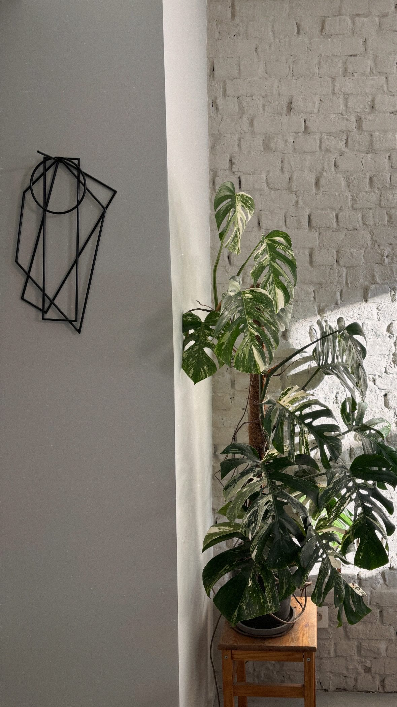
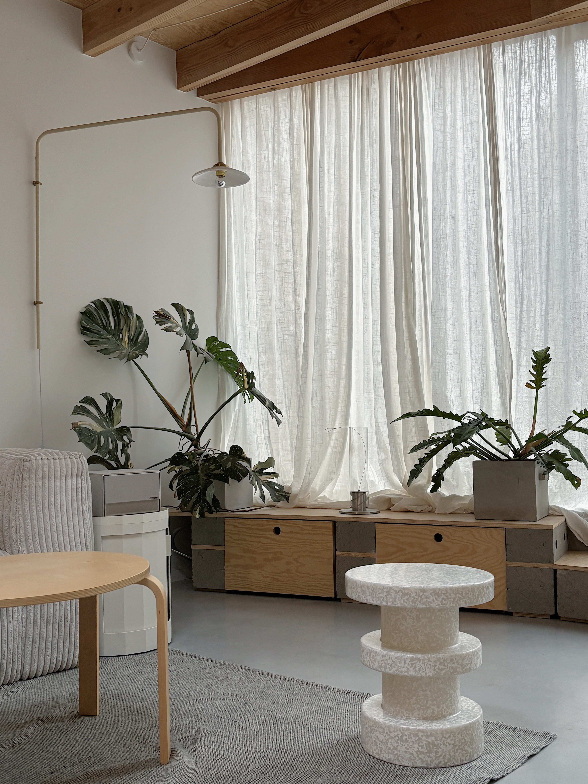
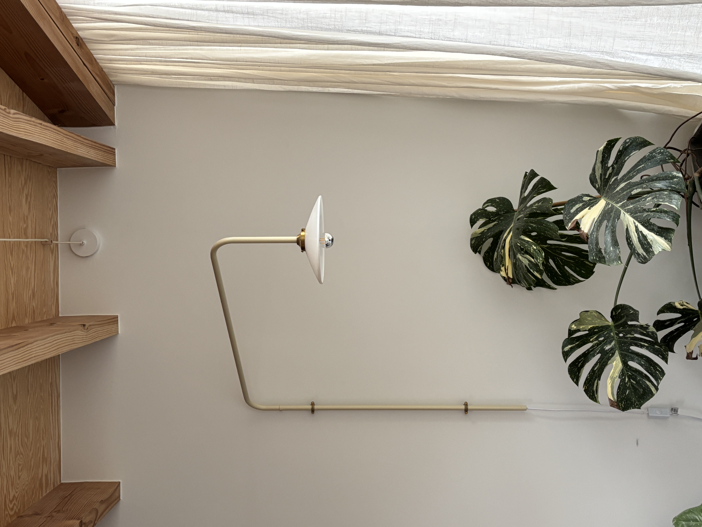

Form Study II
2023




An exploration of geometric tension in cast concrete. Form Study II suspends opposing volumes in visual equilibrium — a sculptural investigation into how intersecting planes create new spatial relationships and challenge perceptions of balance.
- Materials
- Cast Concrete
- Dimensions
- 35 × 25 × 50 cm
- Category
- Sculpture
- Edition
- Limited (5)